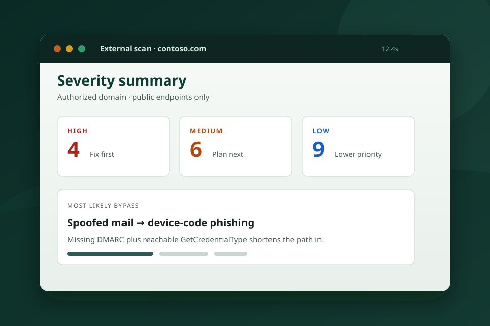

Tenant & federation
OpenID fingerprint, Managed/Federated realm, ADFS MEX / IdP-initiated hints, B2C / CIAM hosts.
M365 Red Team
Enter a domain. In seconds you get High / Medium / Low findings and the most likely bypass path.

One job: unauthenticated Entra / M365 recon against a domain you are allowed to test.
The same problem space as full Entra recon suites — as this product’s own external scanner.
OpenID fingerprint, Managed/Federated realm, ADFS MEX / IdP-initiated hints, B2C / CIAM hosts.
GetCredentialType reachability, OneDrive URL patterns, Graph metadata.
MX, SPF, DMARC, DKIM selectors, TXT SaaS markers, SRV.
SharePoint / OneDrive / admin hosts, REST anonymity check, EXO endpoints, common app portals.
ROPC risk class, device-code phishing, EWS Basic advert, ADFS WS-Trust endpoints.
Consent / FOCI risk classes, dangling Azure CNAMEs, Power Pages OData probes.
Python 3.11+, then two scripts. The browser opens when the app is ready.
Install from python.org and check Add python.exe to PATH.
git clone https://github.com/vladjoh/RedTeam.git
cd RedTeam
.\scripts\setup-windows.ps1
.\scripts\run-assessment.ps1Browser opens http://localhost:8501.
Enter an authorized domain → Start external scan → read High / Medium / Low → download the report.
Only scan tenants you are authorized to test. Get written permission and tell the owners before you run.
What this tool sees from outside, an attacker can usually see too. Silence is not safety.
Always verify findings on the target before changing production controls. The scan uses public endpoints only and finishes in seconds — that does not make surprise testing OK.
Questions, authorized-use partnerships, or issues with the scanner.